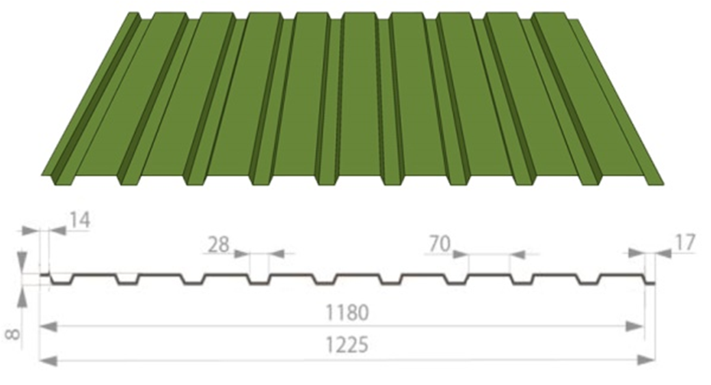
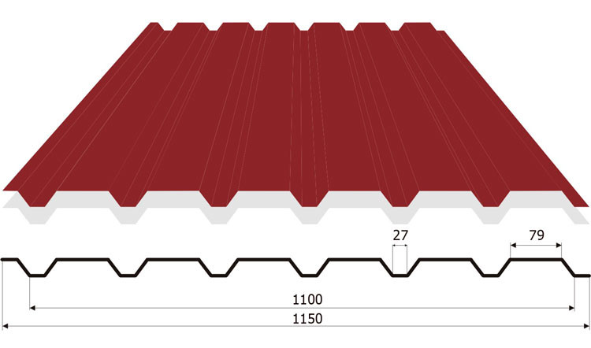
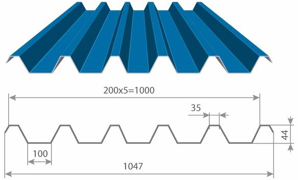
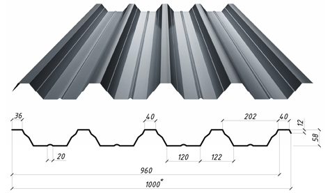
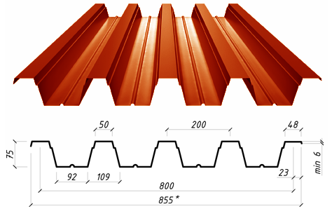

Профилированный лист (профнастил) производится методом холодного проката, для этого на поверхности специальными роликами выдавливаются продольные углубления.
В качестве сырья используется высококачественная оцинкованная сталь с полимерным покрытием. Качественный профнастил чрезвычайно долговечен, надежен и прочен.
Стоит профнастил относительно недорого, что делает его доступным для большого числа покупателей. Ассортимент расцветок профнастила огромен, поэтому каждый покупатель без труда найдет именно тот оттенок, который придется ему по душе.
Для его установки не требуется специальных инструментов, к тому же, его монтаж можно проводить в любое время года, независимо от погодных условий.
Профилированный лист универсальный материал, применяется в строительстве для:
— кровли (кровельный профнастил),
облицовки стен автомобильных моек, гаражей, бытовок, складов (стеновой — профнастил),
— как каркас при быстром строительстве объектов нежилого фонда (ларьков, магазинов, киосков), (несущий профнастил),
— заборов и ограждений при строительстве, навесов и козырьков,
— несъемной опалубки при строительстве крупных объектов.
В третьем случае объекты возводятся по принципу сендвич-панелей, где с одной стороны профнастил служит несущей конструкцией, с другой стороны – облицовочным материалом, а между ними укладывается теплоизоляция.
Различают три основных вида профнастила: кровельный, стеновой и несущий.
— Кровельный профнастил используется при установке кровли зданий, он имеет большую высоту, чем стеновой или несущий.
— Стеновой профнастил наменее объемный.
— Несущий профнастил, который используется для несущих конструкций, характеризуется больше толщиной, при этом он может иметь значительную высоту гофры.
При этом форма погиби может быть абсолютно разной. Ниже представлены лишь некоторые разновидности профилей.
Выбор размера – одно из основных преимуществ профнастила. У вас есть возможность приобрести целый лист той длины и ширины, которые будут максимально подходить для ваших целей.
Длина профнастила может быть в пределах 0,3 — 12 м.
Модельный ряд профнастила: ПС 8, ПС 10, ПС 15, ПС 20, ПС 21, ПС 33, ПС 44, ПС 57, ПС 60, ПС 75.
Толщина металла от 0.3 до 0,9 мм.
Выбор толщины профиля зависит от площади покрываемого здания и климатических характеристик.
Высота профнастила – это расстояние между крайними точками двух смежных гофр. Чем больше высота профиля, тем объемнее будет выглядеть крыша или здание, изготовленное из этого материала. Высота зависит от рисунка погиби
Широкая цветовая гамма полимерного покрытия профиля позволяет подобрать материал, наиболее подходящий вам по цвету. Выпускаются профили 30 различных оттенков. Подобрать цвет профильного листа вы можете по шкале RAL.
 
